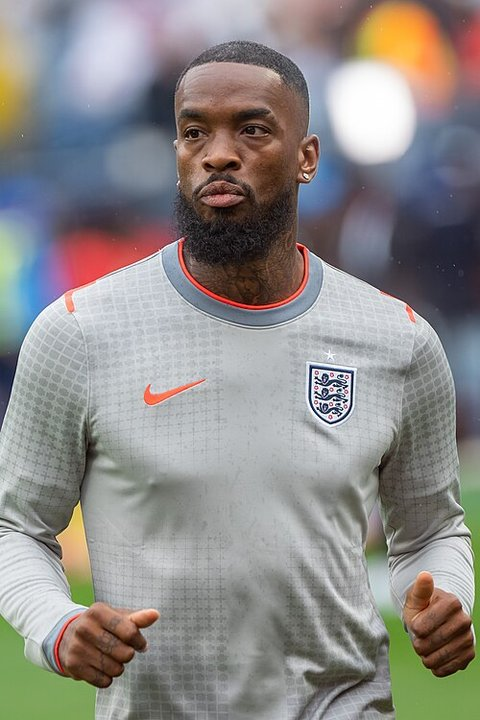

Summary · Question 8 of 14
National team and long run
The last pages cover the national-team squad, the Big-5 count over three decades and the two comparison countries.
League tier of the 2026 FIFA World Cup squad: England and the peers at the tournament
96 % of England’s 2026 FIFA World Cup squad (25 of 26) played in the 9 top-ranked leagues in 2025/26; the highest share among the 6 peers at the tournament is Germany’s 100 %.
- Top-9 %
- Stepping %
- Domestic %
- Other %
-
JPJordan Pickford
-
EAElliot Anderson
-
Dean Henderson
-
MRMorgan Rogers
-
DRDeclan Rice
-
EKEzri Konsa
-
OWOllie Watkins
-
TCTrevoh Chalobah
-
NONico O'Reilly
-
HKHarry Kane
-
JQJarell Quansah
-
BSBukayo Saka
-
DBDan Burn
-
DSDjed Spence
-
 Reece James
Reece James
-
JHJordan Henderson
-
JBJude Bellingham
-
EEEberechi Eze
-
MGMarc Guéhi
-
 Anthony Gordon
Anthony Gordon
-
MRMarcus Rashford
-
KMKobbie Mainoo
-
NMNoni Madueke
-
JSJohn Stones
-
JTJames Trafford
-

Ivan Toney
How the peers are sourced
- Top-9 %
- Stepping %
- Domestic %
- Other %
ENG England
Squad 26
96 %
GER Germany
Squad 26
100 %
NED Netherlands
Squad 26
96 %
BEL Belgium
Squad 26
96 %
POR Portugal
Squad 26
88 %
How to read it: one tile per squad player, tinted by the tier of the league where he played most minutes in 2025/26; the fold below compares the peers at the same tournament. Tier counts are administrative.
How we know
As an analytics question In numbers: league tier of every 2026 FIFA World Cup squad member's most-minutes 2025/26 row, matched by name and birth year, per country.
What we did We matched every named squad player to his club season and recorded which level of league he was actually playing in.
Sources Wikipedia squad lists (CC BY-SA 4.0, accessed 14 September 2026) matched to 2025/26 league rows on normalised name plus birth year; tier = league of the most-minutes row; squad players without a 2025/26 row, per country: ENG 1, GER 0, FRA 1, ESP 1, NED 1, BEL 1, POR 3.
What this means
25 of the 26 players England took to the 2026 FIFA World Cup played in a top-9 league. The share is a count over one squad, so one player moves it by about 4 percentage points, and the comparison covers only the 6 peers that reached the tournament, not the whole peer set.
What this does not show
Players who were not selected, how the squad played, and whether a player’s league tier reflects his own level or his club’s.
Data snapshot: FBref tables fetched 14 September 2026, snapshot commit c28dc59 · code: src/squad_lens.py · status: exploratory, not pre-registered · all limitations